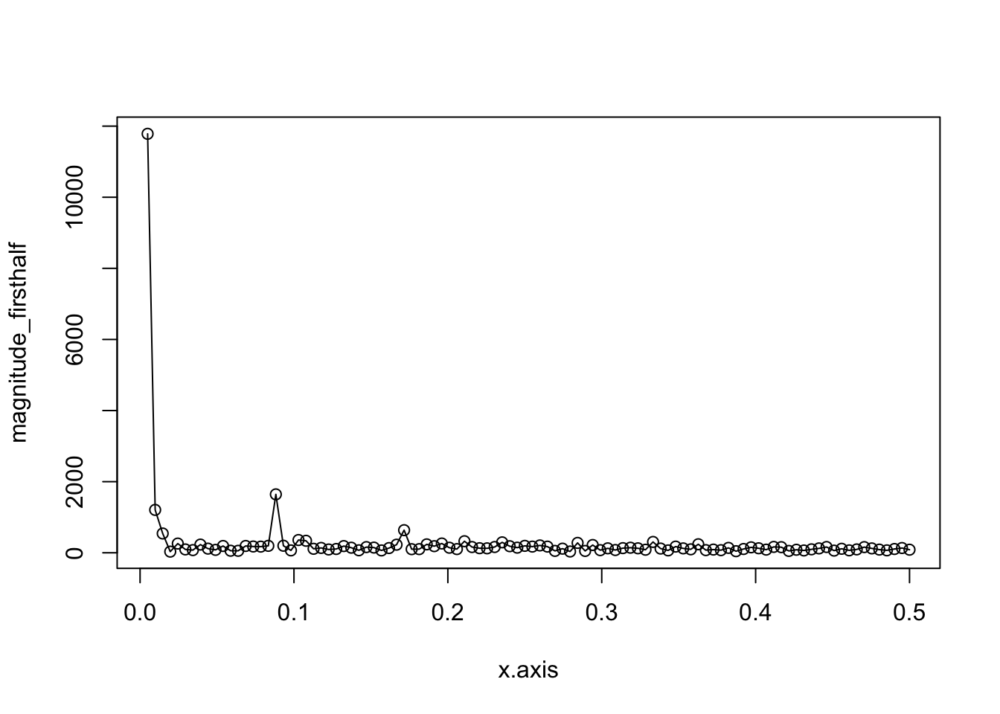
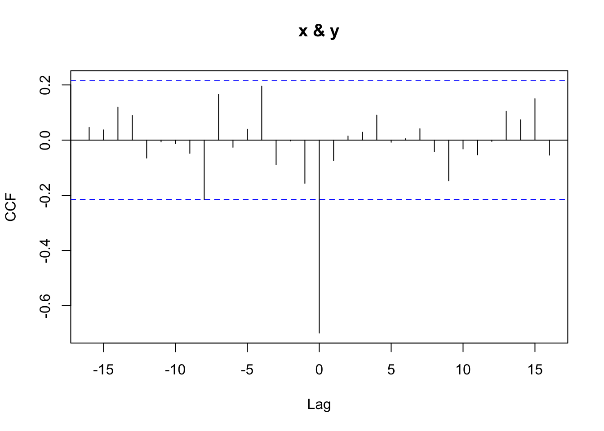

Chapter 8 공간통계학
이 장에서는 공간통계학과 관련된 내용을 다룬다. 주된 내용은 2015년 공간통계학 특강 수업 내용이다.
8.1 공간자료의 종류(classes of spatial data)
결과적으로 공간 자료의 종류는 크게 세 가지로 나눌 수 있다.
연속자료(continuous data; 이것을 다루는 분야가 geostatistics)
이산자료(discrete data, lattice data, areal data)
점 패턴 데이터(point pattern data)
- Elevation data
Davis (1972)는 geoR이라는 R 패키지를 만들었다.
이 안에 있는 자료 elevation은 52개 지역의 표면 높이(surface elevation)를 측정한 자료이다. 기본 distance unit은 50 feet이며, 높이의 기본 distance unit은 10 feet이다.

이러한 자료를 plot하기 위해서는 geodata로 바꿔줘야 한다.
- Rongelape Island data
Diggle et al. (1998)이 만든 R geoRglm 패키지의 롱겔라프 환초 자료(Rongelape Island data, rongelap)은 1954년 미국이 수소탄 실험을 한 곳의 방사능을 측정한 자료이다. 이 자료는 공간 이산 자료(spatial discrete data)의 예이다.

이 자료는 다른 자료들과 달리 sampling design이 되어있는 자료이다. 즉 자료를 200m마다 하나씩 일정하게 뽑은 것이다. 추가로 4개의 지역에 대해서는 50m마다 subsampling을 하였다. 200m마다 측정한 자료로는 200m보다 작은 variation을 구할 수 없다. 그래서 microscale variation을 보기 위해 추가로 subsampling을 한 것이다.
- Scottish lip cancer data
다음 자료는 1975-1980 동안 스코틀랜드 지역 남성의 lip cancer case 숫자를 county별로 센 scotland 자료이다. 이 자료는 SpatialEpi 패키지에 있다. 이 자료는 spatial dependency가 clear해서 많이 쓰인다고 한다.

이 자료는 앞 자료들과 달리 point 자료가 아닌 지역별 자료이다. 이런 자료를 공간 집적 자료(areal aggregation data)라고 한다. 이런 경우의 자료 분석은 first neighbor, second neighbor에 어떤 자료가 있는지 살펴보는 것을 많이 한다.
- Inventory data of the Zurichberg Forest, Switzerland
이 자료는 spBayes에 있는 취리히 숲 자재 자료(Zurichberg forest inventory data, Zurich.dat)이다. 이 자료의 특징은 숲이 어디 생길지 모르기 때문에 위치 자체가 random이 된다는 것이다. 앞선 자료들의 위치가 고정되어 있었던 것과는 다른 상황이다. 나무의 size를 잴 때에는 사람 가슴 정도 높이의 trunk를 잰다고 한다.

산림학에서의 관심사는 나무와 나무 사이의 상호작용(interaction)이 있는지 보는 것이다. 나무의 종류에 따라 같이 자랄 수도 있고, 또는 한 나무만 살아남을 수도 있는데 이러한 현상에 관심을 갖는 것이다.
Location 자체가 random인 자료들은 point process로 모델링한다. 여기서 \[\mathbf{x}=(x_{1}, \cdots , x_{n})\] 이라고 하면 \(\mathbf{x}\)와 \(n\)이 모두 random이다.
또 mark라고 추가정보가 들어올 수도 있다고 한다. \[M|\mathbf{x}=(m_{x_{1}}, \cdots , m_{x_{n}}).\]